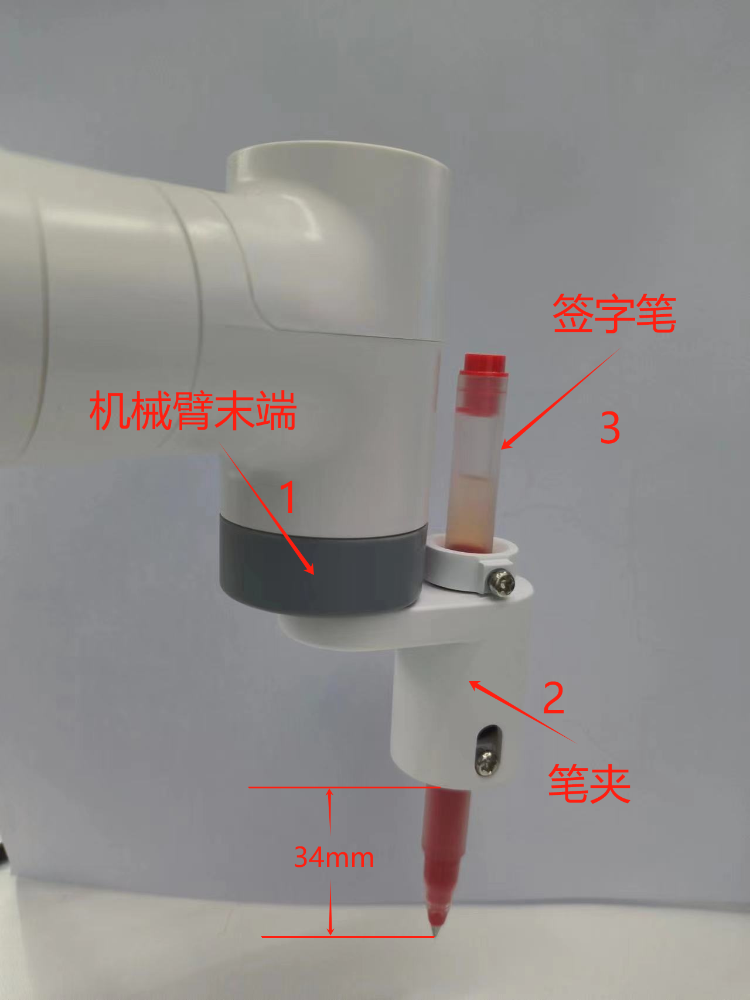

绘制图案
可以通过解析一个 gcode 文件中的指令来控制机械臂移动，实现绘制操作。
安装示意图
注意：机械臂末端和笔夹使用乐高科技件连接。

使用说明
1.连接设备
将MyCobot连接到电脑，将笔夹安装到机械臂末端，将签字笔放到笔夹中拧紧螺丝固定。
注意：使用G型底座2.0将机械臂固定于桌面上，将A4白纸放置于桌面上，用于绘制图案。
2.安装所需的包
下载代码: https://github.com/elephantrobotics/pymycobot
打开终端，切换路径到 pymycobot/demo/myCobot_280_demo 文件夹，运行如下指令：
pip install pyserial pymycobot
3.修改端口号
编辑 280_draw_gcode.py 文件
# 将COM14修改为你的电脑检测到的实际端口号
import time
from pymycobot.mycobot import MyCobot # import mycobot library,if don't have, first 'pip install pymycobot'
# use PC and M5 control
mc = MyCobot('COM14', 115200) # WINDOWS use ，need check port number when you PC
# mc = MyCobot('/dev/ttyUSB0',115200) # VM linux use
time.sleep(0.5)
...
运行程序即可。
python 280_draw_gcode.py
然后根据终端提示，输入不同的数字选择不同的图案：
1-square
2-triangle
3-five point star
4-quit
注意：机械臂的初始点可以自行更改，但J6关节的姿态必须垂直朝下，速度也可以自行更改，默认为100毫米每秒。
...
# Send the initial point angle of the robot arm, the speed is 50,
# it can be customized and modified, as long as the end is facing down
mc.send_angles([0, -40, -130, 80, 0, 50], 50)
# Wait 3 seconds for the robot arm to move to the specified angle
time.sleep(3)
# Get the current coordinates of the robot arm
get_coords = mc.get_coords()
time.sleep(1.5)
# Save the parsed coordinates
data_coords = []
# Set the drawing speed to 100, and the speed range is 0~100
draw_speed = 100
...